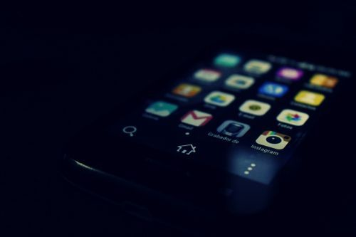

iPhone & Apple
iPhone Became Slow After the iOS Update — Fixes That Work
The phone ran perfectly before the update and now lags — the two normal reasons and their fixes.

You connect your iPhone to the computer to transfer photos or back up — and the computer shows nothing, as if no phone is plugged in. The causes are usually small: a charge-only cable, the "Trust This Computer" prompt ignored, an old iTunes version, or Windows driver issues. The cable is guilty in most houses.
Once the iPhone IS detected, Windows imports via File Explorer (Apple iPhone → Internal Storage) — but only photos in the camera roll. Music, apps and full backups go through iTunes/the Apple Devices app.
The phone ran perfectly before the update and now lags — the two normal reasons and their fixes.
Your iPhone fell in water — sink, toilet, pool, rain — and every second counts.
Your iPhone's speaker — calls on loudspeaker, music, videos — sounds quiet or muffled, even at full volume.